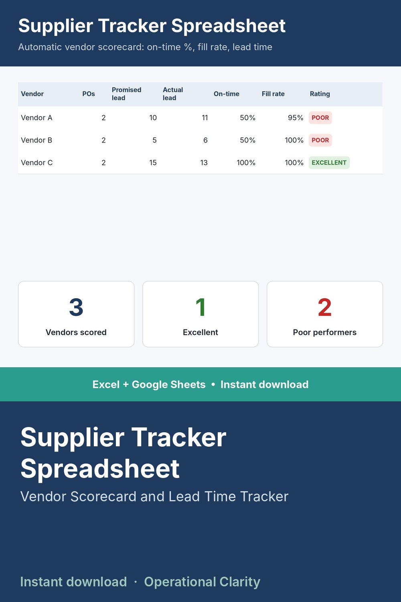

Supplier Tracker Spreadsheet

KNOW WHICH VENDORS ACTUALLY DELIVER ON TIME - BEFORE IT COSTS YOU.
Log every PO's promised vs. actual delivery, and this tracker automatically scores each vendor: on-time percentage, fill rate, average lead time, and lead time consistency. No more relying on gut feel about which supplier is reliable.
WHAT IT DOES
- Log each PO: vendor, promised lead time, actual received date, qty ordered vs received
- Automatic Vendor Scorecard: on-time %, average lead time, lead time range, fill rate, and a plain-English performance rating (Excellent / Good / Fair / Poor)
- Dashboard automatically identifies your best and worst performing vendors
WHAT'S INCLUDED
- Excel file (.xlsx) - no macros, works in Excel 2010+
- Start Here tab explaining setup
- Sample data included
BONUS: this tracker's output (average lead time, lead time variability) plugs directly into our Safety Stock Calculator if you use both.
WHO THIS IS FOR
Purchasing managers and small business owners who want hard data before renewing or dropping a vendor relationship - not just a hunch.
INSTANT DOWNLOAD - no physical item will be shipped. Because this is a digital product, all sales are final.